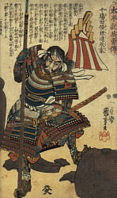
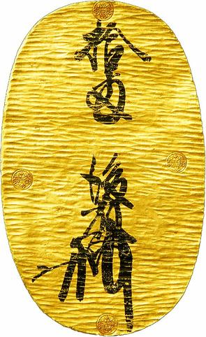
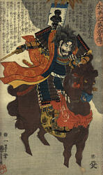
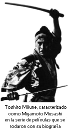
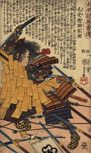
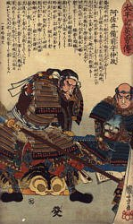
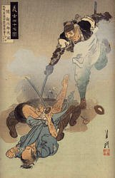
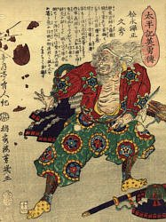

Introducción y traducción al español realizadas por Antonio Rivas
Este trabajo está dedicado a mi padre, quien me enseñó a trabajar con las manos y a pensar con la cabeza, y a apreciar el valor de las dos cosas.
¿Qué hacer si el pájaro no canta?
Nobunaga responde: ¡Mátalo!
Hideyoshi responde: Haz que quiera cantar
Ieyasu responde: Espera
Miyamoto Musashi nace en 1584, en una época en la que el Japón intentaba recuperarse de más de cuatrocientos años de luchas internas. Aunque la figura del Emperador permanecía como cabeza del estado, desde aproximadamente del siglo XII tenía cada vez menos poder real. Debido a esto, Japón estaba en un estado de guerra civil casi continuo,  con luchas entre señores feudales, órdenes de monjes guerreros, y grupos de bandidos, todos luchando contra todos por conseguir poder y territorios. Este estado de cosas llegó a su máximo durante los siglos XV y XVI, en los cuales los Daimyo, o señores feudales, construyeron por todo el país grandes castillos y ciudades fortificadas. Este estado de guerra e inseguridad llevó al empobrecimiento de todo el país.
Hacia 1573 entra en escena Oda Nobunaga. Tras un periodo de lucha por el poder, se convierte en Shogun (dictador militar), y durante nueve años alcanza y mantiene el control en prácticamente todo el país. Nobunaga muere asesinado en 1582, y uno de sus principales siervos, Toyotomi Hideyoshi, continúa la tarea de unificar Japón. Dado que Hideyoshi era de origen plebeyo, no tomó el rango formal de Shogun, sino uno inferior: Taiko. De todas formas, esto no suponía ninguna diferencia a efectos prácticos, pues con independencia del título formal, Hideyoshi dirigía el país.
Hideyoshi suprimió duramente cualquier traza de insurrección. Revivió la antigua diferencia entre la casta guerrera -los Samurái- y el resto de la población, introduciendo restricciones en la posibilidad de llevar armas. Esto fue llamado "la caza de espadas de Hideyoshi", y según las normas que dictó, solo los Samurái tenían el privilegio de llevar dos espadas: la espada corta (que cualquiera podía llevar) y la espada larga, solo permitida a los Samurái, y que les distinguía del resto de la población.
Hideyoshi hizo un buen trabajo en lograr la estabilidad de Japón, e incrementar el comercio interior y exterior, llegando incluso a unificar la moneda (en la foto de la derecha, moneda de 10 Ryo de la época de Hideyoshi). Sin embargo, en el momento de su muerte en 1598, aún no habían sido eliminados del todo los problemas internos. La unificación completa del Japón, así como el periodo de aislamiento del país con el exterior, se alcanzó durante la llamada "Era Tokugawa". En 1603, Tokugawa Ieyasu tomó formalmente el rango de Shogun, tras derrotar al hijo de Hideyoshi, Hideyori, en la batalla de Seki ga Hara.
Ieyasu estableció su sede de gobierno en Edo -actualmente Tokyo-, lugar donde poseía un castillo. El periodo de gobierno de Ieyasu fue más estable y pacífico, y con él comenzó el periodo Tokugawa, que se extendio hasta la llamada Restauración Imperial en 1868. A la muerte de Ieyasu, las siguientes sucesiones fueron miembros de su familia, de modo que el título de Shogun se convirtió virtualmente en un título hereditario de los Tokugawa.
Ieyasu aseguró su dictadura y la posterior transmisión del poder a su familia, al rendir sumisión formal al Emperador -que permanecía como gobernante titular del Japón- pero, al mismo tiempo, restringiendo a este las obligaciones e implicación en los asuntos de gobierno. El único peligro real al poder de los Tokugawa podía provenir únicamente del resto de los señores feudales, por lo que eliminó la posibilidad de revueltas imponiendo la obligación de que todos los señores, o miembros importantes de sus familias, tendrían que vivir en Edo en años alternos. Con esto, que en la práctica era una toma de rehenes, y la imposición de restricciones sobre el derecho a viajar por el país, tenía la situación bajo control, impidiendo la posibilidad de organizarse en contra suya. También estableció su propia red de alianzas, dio los castillos alrededor de Edo a miembros de su propia familia, y organizó una red secreta de policía y espías.
El periodo Tokugawa marca un cambio en la sociedad japonesa. Burocracia, educación, ley, gobierno y clases sociales estaban férreamente controladas, incluyendo las costumbres y comportamientos de las diversas clases sociales. Anteriormente, ya existía una conciencia de clases en Japón, pero ese momento se convierte en una estructura rígida. Existían básicamente cuatro clases de personas: La clase superior la constituían los Samurái, la cual incluía a los grandes señores, oficiales del gobierno, guerreros, y oficiales menores y soldados de a pie. A continuación, en jerarquía estaban los campesinos, no por ser especialmente estimados, sino porque eran los que proporcionaban la comida. Sin embargo, estaban sujetos a muchas obligaciones, entre las cuales no era la menor el tener prohibido abandonar sus tierras. Después estaban los artesanos, y al final de todo, los mercaderes. Poca gente escapaba de esta rígida jerarquía.
Musashi pertenecía a la casta samurái. Los orígenes de la clase samurái se encuentran en el sistema Kondei establecido en el año 792 D.C. en el cual se reorganizó el ejército japonés, asignando a los diversos cuerpos oficiales reclutados entre los jóvenes de las familias de alto rango. Estos oficiales iban a caballo, vestían armadura, y usaban el arco y la espada. En el año 782, el emperador Kammu comenzó la construcción de Kyoto, donde creó un lugar de entrenamiento (que aún existe) llamado el Butokuden, que significa: "Sala de las virtudes de la Guerra".
Cuando los ejércitos privados de los señores feudales fueron desorganizados bajo los gobiernos de Hideyoshi e Ieyasu, muchos samuráis "en paro" rondaban por el país, siendo inútiles sus habilidades guerreras en una época en la que el país estaba en paz, por primera vez en muchos siglos. Musashi fue uno de estos samuráis, un Ronin o "hombre ola". Por supuesto, aún existían samuráis al servicio de los Tokugawa y de los distintos señores de provincias, pero en un número muy pequeño.
Los samuráis "sobrantes" se encontraron viviendo en una sociedad completamente basada en las antiguas normas de caballería, pero al mismo tiempo, estaban aparte de dicha sociedad, en la que no había lugar para guerreros. Se convirtieron en una clase aparte, manteniendo vivas las viejas reglas de caballería con su devoción a las artes marciales. Esta fue la época del florecimiento del Kendo.
El Kendo, el "Camino de la Espada", había sido siempre sinónimo de nobleza en Japón. Desde la fundación de la clase samurái en el siglo VIII, las artes marciales se convirtieron en la forma más elevada de estudio, inspiradas por las enseñanzas del Zen y los sentimientos del Shinto. Las escuelas de Kendo aparecen en Japón en el periodo Muromachi -aproximadamente de 1390 a 1600-, continuaron durante la época de paz del shogunato Tokugawa, y permanecen hoy en día.
La educación de los hijos de los diversos Shogun Tokugawa se realizaba mediante el estudio de los clásicos chinos y las técnicas de esgrima. Donde en Occidente decimos "la Pluma es más poderosa que la Espada", los japoneses podrían decir "Bunbu Ichi", es decir, "la Pluma y la Espada son Uno".
Para resumir: Musashi fue un Ronin en una época en la que los Samurái se consideraban formalmente la élite, pero que no poseían medios de vida, excepto aquellos afortunados que poseían tierra y castillo. Muchos ronin abandonaron sus armas, convirtiéndose en artesanos, pero otros, como Musashi, persiguieron el ideal del guerrero buscando la iluminación personal a través de los senderos del Kendo. Senderos, en muchas ocasiones, peligrosos, estando a la orden del día duelos por venganzas o como simple prueba de habilidad, incrementados por la rivalidad entre las múltiples escuelas de Kendo que se crearon.
Shinmen Musashi No Kami Fujiwara No Genshin, más conocido como Miyamoto Musashi, nació en 1584, en la población de Miyamoto, en la provincia de Mimasaka. Los ancestros de Musashi eran una rama del poderoso clan Harima, originario de la provincia de Kyushu, la isla más meridional de Japón. Su abuelo, Hirada Shokan, era un servidor de Shinmen Iga No Kami Sudeshige, amo del castillo de Takeyama y un importante señor feudal de la época.
Cuando Musashi tenía siete años de edad, su padre, Munisai, murió o desapareció (no se sabe exactamente). Ya que su madre había fallecido tiempo atrás, el chico fue puesto bajo la tutela de un sacerdote, tío materno suyo. Con esto encontramos a Musashi como huérfano durante la época de las campañas de unificación del país del Taiko Hideyoshi. Hijo de samurái, durante una de las épocas más violentas de la historia de Japón, los escritos le describen como un joven de carácter tumultuoso, con gran fuerza de voluntad, y físicamente muy desarrollado para su edad. Su tío insistió en que estudiase las artes del guerrero, y esto, unido a su desarrollo físico y su carácter violento, hizo que pronto se viese involucrado en combates. Se guarda registro de una lucha en la cual derrotó y mató a un guerrero adulto, teniendo tan solo trece años de edad. Su oponente era Arima Kigei, un experto samurái de la escuela de artes marciales Shinto. Musashi le lanzó a tierra y acabó con él golpeandole la cabeza con un palo cuando intentaba levantarse.
El siguiente combate serio acerca del que se tiene constancia, ocurrió cuando Musashi tenía 16 años, y en el cual derrotó a Tadashima Akiyama. En la misma época, abandonó su casa para comenzar un peregrinaje en el cual perfeccionó sus habilidades a través de numerosos combates, tanto en luchas individuales como en batallas. Finalmente se asentó cuando tenía 50 años, ya que consideró haber aprendido todo lo que podía aprender a base de vagabundear. En ese periodo de la historia de Japón hubo muchos guerreros embarcados en peregrinajes similares, algunos en solitario, como Musashi; otros bajo el patrocinio de alguna escuela de lucha o algún señor feudal.
Durante todo este periodo de su vida, Musashi se mantuvo relativamente aparte de la sociedad, dedicándose exclusivamente a la búsqueda de iluminación a través del Camino de la Espada. Dedicado solamente a perfeccionar sus habilidades, vivió de una forma bastante precaria, vagabundeando por el país y durmiendo al raso en lo más frio del invierno, sin preocuparse de su aspecto físico, ni tomar esposa, ni dedicarse a ninguna profesión, aparte de su propio estudio. Se dice que nunca se le vio en un baño público, ya que no quería ser sorprendido sin sus armas. Su apariencia estaba a tono con este tipo de vida.
En la batalla de Seki Ga Hara, en la cual Ieyasu sucedio a Hideyoshi como máximo dirigente del Japón, Musashi estaba entre las filas del ejército Ashikaga y contra Ieyasu. Es decir, estuvo en el bando perdedor. Sobrevivió no solo a los tres días que duró la batalla, en los cuales murieron alrededor de 70.000 guerreros, sino también a la siguiente caza y masacre de los supervivientes del ejército derrotado.
Cuando tenía 21 años llegó a Kyoto, la capital. Este fue el escenario de la venganza contra la familia Yoshioka. Los Yoshiokas habían sido, durante generaciones, los instructores oficiales en las artes de la guerra de la casa Ashikaga, a la cual pertenecían los Shogunes antes del periodo de Hideyoshi. El padre de Musashi, Munisai, había sido invitado a Kyoto años antes, por el Shogun Ashikaga Yoshiaka. Munisai era un esgrimista competente, y un experto en el manejo del jitte. Según se cuenta, Munisai luchó contra tres de los Yoshiokas, venciendo a los dos primeros, pero siendo totalmente derrotado en el tercer duelo. Estos hechos probablemente tuvieron algo que ver en la actitud de Musashi hacia la familia Yoshioka.
Musashi se enfrentó primero con Yoshioka Seijiro, el cabeza del clan. El enfrentamiento tuvo lugar en un descampado de las afueras de la capital. Seijiro iba armado con una espada auténtica, y Musashi con una de madera. El primer ataque de Musashi lanzó a Seijiro por tierra, donde le apaleó salvajemente. A causa de la vergüenza de haber sido derrotado por alguien que solo enfrentaba una espada de madera a la suya de acero, Seijiro se cortó la coleta de samurái.
Tras este combate, Musashi permaneció en la capital. Su presencia enfureció a los Yoshiokas, ya que les recordaba la humillación infringida al jefe del clan. El segundo de los hermanos, Denshichiro, retó a Musashi en duelo. Siguiendo una táctica premeditada, Musashi se retrasó en llegar a la cita, haciendo que su contrincante se impacientase primero, se pusiera nervioso después, y finalmente se relajase al pensar que Musashi se había asustado y no se presentaría. Cuando finalmente apareció, segundos después de comenzar el combate había roto el cráneo de Denshichiro con un solo golpe de su espada de madera.
La casa Yoshioka aún organizó un tercer duelo, esta vez contra Hanshichiro, el hijo mayor de Seijiro. Hanshichiro era tan solo un niño de alrededor de diez años de edad, por lo que, en realidad, Musashi se enfrentaría con toda la cohorte de guardaespaldas que le acompañaban. El lugar concertado para el combate era un bosquecillo cercano. Esta vez Musashi llegó con mucha antelación, y se escondió para esperar la llegada de los contrarios. El muchacho llegó vestido formalmente con armadura, y acompañado de un gran número de samuráis de la familia. Musashi esperó escondido, y cuando creían que en esta ocasión se lo había pensado mejor y había abandonado Kyoto, apareció repentinamente en medio de ellos, liquidando a Hanshichiro. Abriéndose paso a continuación, entre la cohorte de guerreros, con una espada en cada mano, logró escapar de la trampa.
Tras el episodio de los Yoshiokas, Musashi continuó sus vagabundeos por Japón, llegando a convertirse en una leyenda viviente. Se encuentran menciones a su nombre en numerosos registros, diarios y monumentos, canciones populares y relatos, desde Tokyo a Kyushu. Antes de haber cumplido 29 años ya había constancia de alrededor de sesenta duelos, todos los cuales había vencido.
En 1605, el mismo año del asunto con los Yoshiokas, Musashi visitó el templo Zen de Hozoin, al sur de Kyoto. Este era un templo regido por monjes guerreros. Allí tuvo un encuentro con el principal luchador del templo. El monje era un experto en la Naginata (alabarda), y este fue el arma que empleó. Musashi se enfrentó a él, armado solamente con su espada de madera, y le derrotó en los dos combates que mantuvieron. Tras esto, permaneció en el templo durante una temporada, estudiando técnicas de lucha y Zen.
Nota: El templo de Hozoin aún está activo hoy en día, y los monjes siguen practicando las técnicas de lucha de entonces. Es interesante recalcar que la palabra "Osho", que actualmente significa "Monje", en los tiempos de Musashi quería decir "Maestro en Naginata".
Algunos de los duelos de los que se tiene constancia muestran la actitud de Musashi de adaptarse a cada combate según la situación del momento, sin formas predeterminadas, tal y como años después escribiría en el Libro de los Cinco Anillos. En una ocasión se enfrentó a un experto en el manejo del Kusarikama (una hoz con una cadena), y en lugar de usar la espada, sacó un cuchillo, entrando dentro de la zona en la que la cadena de su contrario podía maniobrar, y apuñalando a este. En otra ocasión se encontraba cortando madera para fabricar un arco, cuando fue atacado repentinamente por un individuo; usando el arco como si se tratase de una espada, golpeó a su atacante en la cabeza haciéndole huir.
A lo largo de sus viajes, pasó por la provincia de Izumo, donde visitó la casa del Daimyo local, el Señor Matsudaira, solicitando permiso para enfrentarse contra su luchador más experto. El permiso fue concedido para luchar con un hombre experto en el manejo del Bo. Ya que se trataba de un duelo de práctica, no se usarían armas de verdad, y Musashi optó por dos espadas de madera. con un arma en cada mano, acorraló a su contrincante y le desarmó golpeándole en los brazos. Ante la sorpresa de sus seguidores, Matsudaira pidio a Musashi que luchara contra él. Cuando Matsudaira se disponía a colocarse en posición de combate, preparando una guardia formal, Musashi atacó bruscamente la espada del Daimyo, partiéndola en dos y dejándole desarmado incluso antes de haberse podido preparar. Matsudaira reconoció su derrota, y Musashi permaneció en casa de este durante un tiempo, en calidad de profesor del Daimyo.
El combate más famoso de Musashi tuvo lugar en 1612, cuando se encontraba en Ogura, en la provincia de Bunzen. Su adversario era un tal Sasaki Kojiro, un samurái que había desarrollado una técnica muy potente y especial de lucha, conocida como Tsubame-gaeshi (la Parada de la Golondrina), inspirada en el movimiento de la cola de las golondrinas en vuelo. Kojiro estaba al servicio del señor de la provincia, Hosokawa Tadaoki. El permiso para el duelo fue concedido, y se decidio que tendría lugar a las 8 de la mañana siguiente, en la isla de Ganryu, situada a unos kilómetros de Ogura. Aquella noche, Musashi abandonó el lugar donde se alojaba, y se fue a casa de un antiguo conocido. Esto inspiró el rumor de que la fama de invencible que tenía la técnica de Kojiro, había asustado a Musashi y este se preparaba para huir. A la mañana siguiente, Musashi fue llevado en barca hacia la isla donde tendría lugar el duelo, y por el camino, se dedicó a construir un cordel de papel trenzado para sujetar las mangas de su kimono, y después, a tallar una espada de madera utilizando el remo de repuesto.
Cuando el bote llegó al lugar del combate, Kojiro y sus seguidores se quedaron asombrados ante el aspecto de Musashi, espada de madera en mano, las mangas sujetas con tiras de papel, y una toalla anudada a la cabeza. Kojiro desenvainó su espada, y lanzó a un lado la funda. Musashi le provocó diciéndole que, ya que se había deshecho de la funda, no volvería a tener necesidad de ella, al tiempo que se colocaba en guardia manteniendo su propia espada sujeta al cinto. Enfureciéndose, Kojiro lanzó el primer golpe, que arrancó la toalla de la cabeza de Musashi, al tiempo que este, esquivando por poco, golpeó la cabeza de Kojiro con la espada de madera, y acabando con él.
Después de este combate, Musashi no volvió a usar la espada de verdad en ningún duelo. Era invencible, y a partir de entonces se dedicó a estudiar y a buscar la forma de comprender plenamente el Camino del Kendo.
En 1614 y 1615, Musashi tuvo la oportunidad de adquirir más experiencia en la guerra a gran escala. El Shogun Ieyasu Tokugawa organizó un asedio a la fortaleza de Osaka, donde los seguidores del clan Ashikaga se habían levantado en armas contra el gobierno del Shogun. Musashi se unió a las fuerzas de los Tokugawa, luchando ahora contra aquellos con quienes que había estado al lado cuando era joven, en Seki Ga Hara.
De acuerdo con sus propios escritos, Musashi comenzó a comprender el Camino de la Estrategia cuando alcanzó los 50 años de edad. Junto con su hijo adoptivo Iori, un huérfano que había encontrado en sus viajes, se asentó en Ogura en el año 1634. No volvió a salir nunca de la isla de Kyushu.
Tras seis años en Ogura, Musashi fue invitado a pasar un tiempo como huésped de Hosokawa Churi, señor del castillo de Kumamoto. Pasó algunos años con Lord Churi, tiempo durante el cual se dedicó a enseñar y a pintar. En 1643 se retiró para llevar una vida de ermitaño en la cueva de Reigendo, lugar donde escribió el "Libro de los Cinco Anillos", el cual dedicó a su pupilo Teruo Magonojo. Terminó de escribir el libro unas semanas antes de su muerte, el 19 de mayo de 1645.
Musashi es conocido en Japón como "Kinsei", que significa algo así como "Sacerdote de la Espada". El Libro de los Cinco Anillos encabeza cualquier bibliografía sobre Kendo, y resulta único entre todos los libros sobre artes marciales, en el sentido de que trata la estrategia de guerra a gran escala exactamente de la misma forma que el combate individual. El libro no es una tesis sobre estrategia, sino, usando las palabras del propio Musashi: "una guía para aquellos que desean aprender acerca de la estrategia". Como tal guía, sus contenidos siempre están más estudiantes son capaces de percibir. Cuanto más se lee el libro, más se encuentra en sus páginas. Se trata, de alguna manera, de "la última voluntad" de Musashi, la llave para abrir el sendero que él había recorrido. Al igual que otros ronin de la época, Musashi podría haber fundado una escuela cuando rondaba la treintena, siendo ya famoso y respetado, y haberse dedicado a disfrutar del éxito. Sin embargo, la opción que siguió fue la de continuar en solitario con su estudio, tal y como había hecho hasta entonces. Incluso en sus últimos años, abandonó la vida confortable que disfrutaba en el castillo de Kumamoto, y vivió dos años más en una cueva, en soledad, y dedicado a la contemplación y a escribir lo que había aprendido.
Escribió que "cuando has comprendido el Camino de la Estrategia, no existe una sola cosa que no seas capaz de comprender", y "puedes ver el Camino en todas las cosas". De hecho, se convirtió en un maestro en casi todas las artes y artesanías. Realizó obras maestras de pintura en tinta, posiblemente más valoradas que las de cualquier otro pintor. fue un experto en el arte de la caligrafía, realizó esculturas en madera, trabajos en metal, e incluso fundó una escuela de artesanos "Tsuba" (las empuñaduras labradas de las espadas). También se dice que escribió poemas y canciones, aunque ninguno de estos se ha conservado en la actualidad. Sus obras estaban firmadas habitualmente con su sello "Musashi", y también con el sobrenombre de "Niten". Niten significa "dos cielos" y es el nombre que dio a su "escuela" de estrategia. Tal y como escribió: "estudia los Caminos de todas las profesiones". Y evidentemente fue el primero en seguir su propio consejo.
Musashi escribió sobre los diversos aspectos del Kendo, de tal forma que cada uno puede estudiar según su nivel. Un principiante puede sacar provecho a nivel de principiante, así como un experto puede captar sutilezas a nivel experto. Su obra no se aplica solo a la estrategia militar, sino a cualquier situación en la cual es necesario usar de la táctica. Los hombres de negocios japoneses usan el "Libro de los Cinco Anillos" como un manual de gestión empresarial, desarrollando campañas de ventas tal y como si fuesen operaciones militares. Y que funcione bien o no, depende simplemente de lo bien que se hayan comprendido los Principios de la Estrategia.
He estado muchos años estudiando el Camino de la Estrategia, al que llamo Ni Ten Ichi Ryu, y ahora pienso explicarlo por escrito por primera vez. Ahora se cumplen los primeros diez días del décimo mes del veinteavo año de Kanei (1645). He escalado la montaña Iwato, de Higo, en Kyushu, para rendir homenaje al Cielo; rezado a Kwannon; y me he arrodillado ante el Buda. Soy un guerrero originario de la provincia de Harima. Mi nombre es Shinmen Musashi No Kami Fujiwara No Geshin, y tengo sesenta años.
Desde mi juventud, mi corazón se ha inclinado hacia el Camino de la Estrategia. Mi primer duelo ocurrió cuando tenía trece años, y en él derroté a un estratega de la escuela Shinto, llamado Arima Kihei. A mis dieciséis años derroté a un hábil guerrero, Tadashima Akiyama. Cuando tenía veintiún años fui a la capital, y tuve encuentros con todo tipo de guerreros, no siendo nunca derrotado en ninguna de esas luchas.
Después de aquello, viajé de provincia en provincia, entablando combates con estrategas de diferentes escuelas, y ni una sola vez dejé de vencer, y fueron más de sesenta combates. Todo esto ocurrió entre mis trece y mis veintiocho o veintinueve años de edad.
Cuando llegué a la treintena, miré hacia atrás contemplando mi pasado. Todas esas victorias no se debieron a tener una estrategia depurada. Quizás fue mi habilidad natural, o el deseo del Cielo, o que los luchadores de las diversas escuelas eran inferiores. Por lo tanto, estudié mañana y tarde buscando el principio, y llegué a comprender cual era el Camino de la Estrategia cuando cumplí cincuenta años.
Desde entonces he vivido sin seguir ningún Camino en particular. De acuerdo con la virtud de la Estrategia he practicado muchas artes y habilidades, siempre sin un maestro. Para escribir este libro no uso la ley de Buda o las enseñanzas de Confucio, ni las antiguas crónicas guerreras o libros de tácticas marciales. Tomo mi pincel para explicar el auténtico espíritu de esta escuela "Ichi", tal y como se refleja en el Camino del Cielo y de Kwannon. Este momento es la noche del décimo día del décimo mes, a la hora del Tigre. (3 a 5 a.m.)
La Estrategia es el arte del guerrero. Los comandantes deberían ser la imagen de este arte, y las tropas deberían al menos conocer sus senderos. Sin embargo, no existe un guerrero en el mundo actual que realmente comprenda el Camino de la Estrategia.
Existen varios Caminos. Está el Camino de la salvación, según las enseñanzas de Buda; el Camino de Confucio, que sirve de guía al aprendizaje; el Camino de la sanación, que siguen los médicos, tal y como los poetas siguen el Camino de la armonía; y otros Caminos, el de la ceremonia del té, la arquería, y muchas otras artes y oficios. Cada persona practica el Camino más acorde con sus inclinaciones.
Se dice que un guerrero sigue el doble Camino de las Letras y de la Espada, y que ha de practicar ambos Caminos. Incluso si un hombre no tiene una habilidad natural, puede ser un guerrero mediante la práctica perseverante de ambas divisiones del Camino. Concretando, el Camino del guerrero consiste en aceptar la muerte resueltamente. Aunque no solo los guerreros, sino también los sacerdotes, mujeres, campesinos y el resto de la gente, han de estar preparados para aceptar la muerte, por motivos de honor, culpa, o deber, es algo diferente. El guerrero es diferente en esto, puesto que el estudio del Camino de la Estrategia se basa en derrotar a otros hombres. Ya sea una victoria conseguida en un duelo individual, o en una batalla entre dos bandos numerosos, podemos obtener poder y fama para nosotros mismos o para nuestro señor. Esta es la virtud de la estrategia.
En China y Japón, los que siguen el Camino han sido conocidos como "Maestros de la Estrategia". Los guerreros deben aprender este Camino.
Últimamente, existe gente que es considerada por el resto como estrategas, pero son tan solo, usualmente, simples espadachines. Los guardianes de los santuarios de Kashima Kantori, en la provincia de Hitachi, recibieron instrucción de los dioses, y crearon escuelas basadas en esas enseñanzas, viajando de región en región enseñando a la gente. Este es el significado actual de la Estrategia.
En tiempos antiguos, la Estrategia formaba parte de las Diez Habilidades y Siete Artes, siendo considerada una práctica beneficiosa. Ciertamente, se trata de un arte, pero como práctica beneficiosa no estaba limitada simplemente a la esgrima. El auténtico valor de la esgrima no puede descubrirse sin salir de los límites de las técnicas de manejo de la espada.
Si observamos alrededor, podemos ver las artes a la venta. Los hombres usan sus armas para venderse a sí mismos. Es como si entre la flor y el fruto, el fruto se hubiese convertido en algo inferior a la flor. En esa versión del Camino de la Estrategia, tanto los que enseñan como los que aprenden se preocupan de adornar y mostrar su técnica, intentando acelerar la llegada de la flor a su plenitud. Hablan de "este Dojo" o "aquel Dojo". Buscan beneficios. Sin embargo, alguien dijo en una ocasión: "Una Estrategia inmadura es la causa de la derrota". Estas palabras son ciertas.
Existen cuatro Caminos en los cuales los hombres pasan a través de la vida: Caballeros, campesinos, artesanos y comerciantes.
El Camino del campesino. Usa herramientas de agricultura, observando desde la primavera al otoño, siempre vigilante de los cambios de estación.
El Camino del comerciante. El fabricante de vino obtiene sus ingredientes, y los usa para crear su medio de vida. El Camino del comerciante es siempre vivir tratando de conseguir beneficio. Este es el Camino del comerciante.
El Camino del caballero guerrero. El Camino del guerrero es dominar la virtud de sus armas. Si un caballero no disfruta de la Estrategia, no apreciará los beneficios del estudio de las armas, y ¿no debería de apreciarlo?
Finalmente, el Camino del artesano. El Camino del carpintero es conseguir la maestría en el uso de sus herramientas, trazar sus planos con medidas correctas y entonces, realizar el trabajo de acuerdo con ese plan. Así es como pasa a través de la vida. Estos son los cuatro Caminos, el del caballero, el campesino, el artesano y el comerciante.
Nota del Traductor: La gran mayoría de las construcciones de la época de Musashi se realizaban en madera. En el texto ha de entenderse que la palabra "carpintero" tiene más importancia que el simple trabajo de la madera. Un "carpintero", en ese sentido, era considerado más bien como un ingeniero y arquitecto.
La comparación con la carpintería es a través de su conexión con las casas. Casas de nobleza, casas de guerreros, las Cuatro Casas, la ruina de las casas, la prosperidad de una casa, el estilo de la casa, y el nombre de la casa. el carpintero usa un "plan maestro" en la construcción, y el Camino de la Estrategia es similar, en el sentido de que se traza un plan de campaña. si quieres dominar el Arte de la Guerra, medita sobre este libro. El profesor es como la aguja, el alumno es como el hilo. Debes practicar constantemente.
Al igual que el arquitecto, el comandante ha de conocer las reglas de la naturaleza, las reglas del país, y las reglas de las casas. Este es el camino del arquitecto carpintero.
El arquitecto ha de conocer la teoría arquitectónica de las torres y los templos, y los planos de los palacios, y ha de emplear hombres para levantar las casas. El Camino del arquitecto carpintero es el mismo que el Camino del comandante de una casa guerrera.
En la construcción de las casas, ha de elegirse la madera. Troncos rectos, sin nudos, y de buen aspecto, se usan para los pilares que son visibles; troncos con pequeños defectos se usan para pilares internos. Tablas de apariencia delicada, incluso con pequeñas imperfecciones, se usan para suelos, dinteles, puertas, puertas correderas, y así sucesivamente. Troncos buenos y fuertes, incluso con pequeñas imperfecciones y nudos, pueden usarse discretamente en la construcción. Los troncos débiles y de mal aspecto, deberían usarse como andamiajes, y ser posteriormente leña para el fuego.
El arquitecto pone a trabajar a sus hombres de acuerdo con su habilidad. Encajadores de suelos, constructores de puertas, dinteles o techos, y así sucesivamente. Aquellos poco hábiles hacen trabajos menos delicados, y aquellos de casi nula habilidad cavan zanjas y hacen otros trabajos de ese tipo. Si el arquitecto conoce y distribuye bien a sus hombres, el trabajo será bien realizado.
El arquitecto ha de tener en cuenta las habilidades y limitaciones de sus hombres, circulando entre ellos y no ordenando nada irrazonable. Ha de conocer como están de moral y de espíritu, y animarles si es necesario. Todo esto es idéntico a los principios de la Estrategia.
Como un soldado, el carpintero afila sus propias herramientas. Lleva su equipo en su caja de herramientas, y trabaja bajo la dirección de su oficial. Construye columnas y vigas con un hacha, da forma a las tablas con un cepillo, corta madera a la medida y la encaja apropiadamente, obteniendo un resultado final tan excelente como sus habilidades le permiten. Este es el arte de los carpinteros. Cuando el carpintero llega a ser realmente hábil y comprende las reglas, puede convertirse en arquitecto carpintero.
La obligación del carpintero es cuidar sus herramientas y ocuparse de que corten bien, para hacer trabajos delicados. Estas son las especialidades del carpintero. Las cosas son similares para los soldados. Debes meditar profundamente sobre esto.
La obligación del carpintero es que su trabajo no parezca deformado, que las junturas no estén mal alineadas, y que el trabajo resulte verdaderamente armonioso, tal que parezca bien acabado, y no simplemente terminado a trozos. Esto es algo esencial.
Si quieres aprender el Camino, considera detalladamente las cosas escritas en este libro una a una. Has de investigar suficientemente.
El Camino mostrado en estos cinco libros concierne a diferentes aspectos. Estos son: Tierra, Agua, Fuego, Tradición (Viento), y Vacío.
El cuerpo del Camino de la Estrategia, desde el punto de vista de mi escuela "Ichi", se explica en el libro de la Tierra. Es dificil apreciar el auténtico Camino solo a través de la esgrima. Conoce las cosas más pequeñas y las cosas más grandes, las más superficiales y las más profundas. Y como si fuera un extenso mapa de carreteras de toda la tierra, el primer libro se llama el Libro de la Tierra.
El segundo es el Libro del Agua. Con el agua como base, el espíritu se convierte en algo como el agua. El agua adopta la forma de su recipiente, a veces es tranquila y a veces un mar embravecido. El agua tiene un color azul claro. Con claridad, las materias de la escuela "Ichi" se muestran en este libro.
Si dominas los principios de la esgrima, cuando eres capaz de derrotar a un hombre, puedes derrotar a cualquier hombre en el mundo. El espíritu para derrotar a un hombre es el mismo que para derrotar a diez millones. El Estratega convierte las cosas pequeñas en grandes, igual que se construye un gran Buda a partir de un modelo de un pie de alto. No puedo escribir en detalle cómo se hace esto. El principio de la Estrategia es, teniendo una cosa, conocer diez mil cosas. Las materias de la escuela Ichi se exponen en el Libro del Agua.
En tercer lugar, está el Libro del Fuego. Este libro trata del combate. El espíritu del fuego es feroz, no importa que el fuego sea pequeño o grande; y esto es lo que ocurre con las batallas. El Camino del combate es el mismo, ya sea un hombre contra otro, que dos bandos enfrentados, cada uno con diez mil hombres. Has de apreciar que el espíritu puede ser grande o pequeño. Cuando es grande, es fácil de percibir; cuando es pequeño, es difícil de percibir. Más claramente: es difícil para un gran número de hombres cambiar su posición, por lo que sus movimientos pueden predecirse con facilidad. Un individuo puede cambiar fácilmente su intención, por lo que sus movimientos son difíciles de predecir. Has de apreciar esto. La esencia de este libro es que debes entrenar día y noche de cara a tomar decisiones rápidas. En la Estrategia es preciso tratar el entrenamiento como una parte de la vida normal, manteniendo tu espíritu inalterado. El combatir en batallas se describe en el Libro del Fuego.
En cuarto lugar, el Libro del Viento. Este libro no trata de mi escuela "Ichi", sino de las otras escuelas de Estrategia. Por Viento entiendo las antiguas tradiciones, las tradiciones actuales, y las tradiciones familiares acerca de la Estrategia. Así, explicaré claramente las estrategias en el mundo. Esto es tradición. Es difícil conocerse a uno mismo sin conocer a los demás. En todos los Caminos existen rutas laterales. Si estudias un Camino diariamente, y tu espíritu diverge, puedes pensar que estás siguiendo un buen camino, pero, objetivamente, no es tu auténtico Camino. Si sigues un camino y diverges un poco, esto se convertirá más tarde en una gran divergencia. Has de comprender esto. Otras Estrategias han llegado a ser vistas como meras escuelas de esgrima, y no es irrazonable que esto deba ser así. El beneficio de mi estrategia, a pesar de que también incluye la esgrima, yace en un principio distinto. He explicado lo que se entiende comúnmente por estrategia en las otras escuelas, en el Libro del viento.
En quinto y último lugar, el Libro del Vacío. Por vacío entiendo aquello que no tiene comienzo ni fin. Alcanzar este principio significa alcanzar el no-principio. El Camino de la Estrategia es el camino de la naturaleza. Cuando aprecies el poder de la naturaleza, conociendo el ritmo de cada situación, serás capaz de golpear a tu enemigo con naturalidad. Este es el Camino del Vacío. Intentaré mostrar cómo seguir el auténtico Camino de acuerdo con la naturaleza en el Libro del Vacío.
Un guerrero, ya sea comandante o soldado de a pie, porta dos espadas a la cintura. En los tiempos antiguos se llamaban la espada larga y la espada corta; ahora se conocen como la espada y la espada acompañante. Baste decir que, en nuestra tierra, sea cual sea el motivo, un guerrero lleva dos espadas. Este es el Camino del guerrero.
En Ni To Ichi Ryu se enseña la ventaja de usar ambas espadas.
La lanza y la alabarda son armas que se usan en el exterior.
Los estudiantes de la escuela Ichi del Camino de la Estrategia, deberían entrenar desde el principio con una espada en cada mano. Esta es la verdad: cuando pones tu vida en juego, has de hacer uso completo de tu armamento. Es equivocado no hacerlo así, y morir con una espada aún sin desenvainar.
Si sostienes una espada con ambas manos, es dificil manejarse con libertad a izquierda y derecha; por lo tanto, mi método es sostener una espada en cada mano. Esto es algo no aplicable a armas de gran envergadura, como la lanza y la alabarda; pero la espada y la espada acompañante pueden sostenerse con una sola mano. Es bastante trabajoso sostener una espada con ambas manos cuando montas a caballo, cuando corres por caminos accidentados, o suelo embarrado, o campos de arroz inundados, o terrenos pedregosos, o entre un grupo de gente. Sostener la espada larga con ambas manos no es el auténtico camino, pues si llevas un arco o lanza u otra arma en la mano izquierda, solo queda una mano libre para sostener la espada. Sin embargo, cuando es difícil golpear al enemigo con una sola mano, puedes usar ambas.
No es difícil sostener una espada en una mano; la forma de aprender esto es entrenar con dos espadas largas, una en cada mano. Parecerá difícil al principio, pero todo es difícil al principio. Un arco es difícil de tensar, una alabarda es difícil de levantar; conforme vas acostumbrándote al arco, tu capacidad de tensarlo se hace mayor. Cuando te acostumbras a sostener la espada larga, crece tu capacidad de manejarla y dirigirla bien.
Tal y como explicaré en el segundo libro, el Libro del Agua, no existe una vía rápida para manejar la espada larga. La espada larga debería usarse desde lejos, y la espada acompañante, desde más cerca. Esto es lo primero de lo que debes darte cuenta.
De acuerdo con esta escuela Ichi, puedes vencer con el arma larga, y también puedes vencer con el arma corta. En resumen, el Camino de la escuela Ichi es el espíritu de vencer, sea cual sea el arma y su tamaño.
Es mejor usar dos espadas en vez de una cuando luchas contra un grupo, y especialmente si deseas tomar un prisionero.
Estas cosas no pueden ser explicadas detalladamente. Conocida una, puedes conocer diez mil. Cuando alcanzas el Camino de la Estrategia no existirá una sola cosa que no seas capaz de percibir. Has de estudiar duramente.
Los diestros en el uso de la espada larga son llamados "estrategas". En otras artes marciales, aquellos diestros en el arco, son llamados arqueros; aquellos diestros en la lanza, son llamados lanceros; en las armas de tiro (armas de fuego), tiradores; en la alabarda, alabarderos. Sin embargo, no llamamos "espadalargueros" a los diestros en la espada larga, ni hablamos de "espada-de-compañeros". Arcos, armas de fuego, lanzas y alabardas forman parte del equipamiento de los guerreros, y, por lo tanto, ciertamente forman parte de la estrategia. Pero dominar la virtud de la espada larga es dominar el mundo y a uno mismo; así pues, la espada larga es la base de la Estrategia. El principio es "Estrategia por medio de la espada". Un hombre que domina la virtud de la espada, puede vencer a diez hombres. Y ya que un hombre puede vencer a diez, así cien hombres pueden vencer a mil, y mil, a diez mil. En mi estrategia, un hombre es lo mismo que diez mil, por lo que esta estrategia es el completo arte del guerrero.
El Camino del guerrero no incluye otros caminos, como el Confucionismo, Budismo, ciertas tradiciones, arreglos artísticos o danza. Pero, aunque no sean parte del Camino, si eres capaz de interpretar el Camino con amplitud de miras, serás capaz de encontrarlo en cualquier actividad. Cada hombre debe esmerarse en su propio Camino.
Existe un tiempo y lugar para usar las armas.
El mejor uso de la espada acompañante es en lugares pequeños, o cuando estás muy próximo a tu oponente. La espada larga puede ser usada con eficacia en casi todas las situaciones.
La alabarda es inferior a la lanza en el campo de batalla. con la lanza, puedes tomar la iniciativa; la alabarda es defensiva. En manos de hombres de igual habilidad, la lanza proporciona una ligera ventaja extra. Si bien la lanza y la alabarda tienen su utilidad, ninguna es beneficiosa en espacios reducidos. No pueden usarse para tomar prisioneros. Se trata, esencialmente, de armas para el campo abierto. De cualquier forma, si aprendes técnicas "de interiores", pensarás con estrechez y olvidarás el auténtico Camino. Después tendrás dificultades en encuentros reales.
El arco es tácticamente fuerte al comienzo de la batalla, especialmente en batallas en llanuras, ya que permite disparar rápidamente desde dentro de las filas de lanceros. Sin embargo, es poco satisfactorio en asedios, o cuando el enemigo está a más de una cierta distancia. Por esta razón, actualmente existen pocas escuelas de arquería. Hoy día existe poco empleo para este tipo de habilidad.
Desde el interior de las fortificaciones, el arma de fuego no tiene igual. Es el arma suprema en el campo de batalla antes de que ambos bandos choquen, pero una vez comienzan a cruzarse las espadas, las armas de fuego se vuelven inútiles.
Una de las virtudes del arco es que puedes ver las flechas en su vuelo, y corregir la puntería de acuerdo con ello, mientras que las balas de las armas de fuego no pueden verse. Has de apreciar la importancia de esto.
Al igual que un caballo ha de ser resistente y no tener defectos, sucede lo mismo con las armas. Los caballos deben ser capaces de caminar con fuerza, y las espadas deben ser capaces de cortar con fuerza. Lanzas y alabardas deben soportar ser empleadas con dureza. Arcos y armas de fuego han de ser robustos. Las armas han de ser recias, antes que decorativas.
No deberías de tener un arma "favorita". Un exceso de familiaridad con un arma es un error tan grande como no conocerla lo suficiente. Tampoco deberías copiar a otros, sino usar las armas que puedas manejar propiamente. Es malo para comandantes y tropa tener gustos y antipatías. Estas son materias que debes aprender profundamente.
Existe un Momento Oportuno en todas las cosas. El Momento Oportuno en la Estrategia es algo que no puede dominarse con maestría sin un alto grado de práctica.
La elección del momento oportuno es importante en la danza y en la música, ya que solo son rítmicas si la sincronización es buena. Sincronización y ritmo, es decir, el apreciar cual es el Momento Oportuno, también están implicadas en las artes marciales, disparo de arcos y armas de fuego, y ataques de caballería. En todas las habilidades y destrezas existe la sincronización.
El actuar con oportunidad ha de existir en toda la vida del guerrero, en su ascenso y declinación, en su armonía y discordia. Similarmente, influye en el Camino del comerciante, en su enriquecimiento o empobrecimiento. Todas las cosas ascienden y decaen siguiendo un ritmo. Has de ser capaz de discernirlo. En Estrategia hay que hacer una serie de consideraciones respecto a esto. Has de conocer cuando el momento es oportuno y cuando no lo es, y entre las cosas grandes y pequeñas, y las rápidas y lentas, y las distancias, y el terreno, encontrar el Momento Oportuno. Este es el aspecto principal de la Estrategia. Es especialmente importante conocer el entorno y armonizar con él; en caso contrario tu estrategia será de resultado incierto.
Ganarás las batallas con el ritmo en el Vacío, que nace del conocimiento del ritmo del enemigo, y usando un ritmo que el enemigo no se espere.
Los cinco Libros están estrechamente relacionados con el sentido de la oportunidad. Has de estudiar lo suficiente para apreciar esto.
Si practicas día y noche en la estrategia de la escuela Ichi, tu espíritu se desarrollará naturalmente. Esto se aplica a la estrategia a gran escala y a la estrategia en el combate de uno contra uno. Esto se menciona por primera vez en los cinco libros de la Tierra, Agua, Fuego, Viento y Vacío. Este es el Camino para aquellos que quieren aprender mi estrategia:
Es importante comenzar interiorizando estos principios en tu corazón, y entrenar el Camino de la Estrategia. Si no contemplas las cosas en una escala más amplia será difícil que domines la Estrategia. Si aprendes y alcanzas esta Estrategia nunca serás derrotado incluso contra veinte o treinta enemigos. Más que nada, comienza poniendo tu corazón en la Estrategia y sigue seriamente el Camino. Serás capaz de derrotar a los hombres en luchas, y serás capaz de vencer solo con tu mirada. También mediante el entrenamiento alcanzarás pleno control de tu propio cuerpo, conquistarás a los demás físicamente, y con el suficiente entrenamiento serás capaz de derrotar a diez hombres solo con tu espíritu. Si alcanzas este punto, ¿no significa acaso que eres invencible?
Por otra parte, mirando la estrategia a escala superior, el que la domina controlará diestramente a muchos subordinados, se tratará a sí mismo correctamente, gobernará el país y alimentará al pueblo, preservará la disciplina del gobierno. Si existe un Camino que incluye el espíritu de no ser derrotado, para ayudarse a uno mismo y mantener el honor, es el Camino de la Estrategia.
Doceavo día del Quinto mes del Segundo año de Shoho (1645)
El espíritu de la escuela de estrategia Ni Ten Ichi se basa en el agua, y el presente Libro del Agua explica tanto las formas de vencer como las formas de espada larga de la escuela Ichi. El lenguaje no es capaz de explicar el Camino detalladamente, pero puede ser comprendido de forma intuitiva. Estudia este libro; lee una palabra y después medita sobre ella. Si interpretas el sentido con demasiada ligereza, puedes equivocar el camino.
Los principios de la estrategia se describen a continuación, en términos de combate individual, pero debes pensar ampliamente, y así serás capaz de aplicarlos igualmente en una batalla con diez mil hombres en cada bando.
La estrategia se diferencia de otras cosas en que, si te desvías del camino, incluso muy levemente, acabarás confuso y seguirás un mal camino.
Si meramente lees este libro, no alcanzarás el camino de la estrategia. Absorbe las cosas aquí escritas. No solo es cuestión de leer, memorizar o imitar, sino que has de comprender el principio a partir del cual tu propio corazón estudia profundamente, para absorber todas estas cosas en tu interior.
En la Estrategia, tu actitud espiritual no ha de ser diferente de la normal. Tanto en el combate como en la vida diaria, deberías estar firmemente decidido y pensar calmadamente. Enfrentándote a cada situación sin tensiones, pero tampoco descuidadamente; con espíritu sereno y carente de prejuicios. Con el espíritu tranquilo, no dejes que tu cuerpo se relaje; y cuando tu cuerpo se relaja, no dejes que tu espíritu se descuide. No dejes que tu espíritu sea influido por tu cuerpo, o tu cuerpo influido por tu espíritu. No seas ni escasamente espiritual, ni demasiado espiritual. Ser todo espíritu es débil, y carecer de espíritu es débil. No dejes a tu enemigo conocer tu espíritu.
La gente pequeña debe estar completamente familiarizada con el espíritu de la gente grande, y la gente grande debe estar familiarizada con el espíritu de la gente pequeña. Cualquiera que sea tu tamaño, no te dejes llevar por las reacciones de tu cuerpo. Con tu espíritu abierto y libre de restricciones, observa las cosas desde un punto de vista elevado. Has de cultivar tu sabiduría y tu espíritu. Perfecciona tu sabiduría: aprende sobre la justicia, distingue entre el bien y el mal, estudia los caminos de las diferentes artes. Cuando no puedas ser derrotado por los hombres habrás interiorizado la sabiduría de la estrategia.
La sabiduría de la estrategia es diferente de las otras cosas. En el campo de batalla, incluso estando bajo gran presión, debes estudiar incesantemente los principios de la estrategia, de forma que puedas desarrollar un espíritu sereno y firme.
Adopta una postura con la cabeza erguida, ni colgando hacia delante, ni mirando a lo alto, ni balanceándose. Tu frente y entrecejo no deben estar ceñudos. No gires tus ojos ni dejes que parpadeen, mantenlos ligeramente entrecerrados. Con los rasgos compuestos, no dejes sobresalir la línea de la nariz y mantén sus orificios ligeramente abiertos. Mantén la línea del dorso del cuello recta, instila vigor desde los hombros hacia abajo a través de todo tu cuerpo. Baja los hombros, no dejes sobresalir las nalgas, pon fuerza en tus piernas desde las rodillas hasta la punta de los dedos. Tensa tu abdomen y no inclines las caderas. Sujeta firmemente la espada acompañante con tu cinturón contra el abdomen, de modo que no esté aflojada en la cintura. Esto se llama "mantener la espada en cuña".
En todas las formas de estrategia, es necesario mantener la posición de combate en la vida diaria, y hacer de tu postura habitual tu posición de combate. Has de meditar profundamente sobre esto.
La mirada debe ser profunda y amplia. Esta es la doble mirada "vista y percepción". La percepción es fuerte, y la simple vista es débil.
En estrategia es importante ver las cosas lejanas como si estuviesen cerca, y tomar un punto de vista distante de las cosas cercanas. Es importante en la estrategia el conocer la espada del enemigo, y no ser distraído por movimientos insignificantes de esa espada. Has de estudiar esto. La mirada es la misma tanto para un combate individual como para una batalla a gran escala.
Es necesario en la estrategia el ser capaz de ver a ambos lados sin mover los ojos. Esta habilidad no se domina con facilidad. Asimila lo que está escrito aquí: usa esta mirada en la vida cotidiana y no la modifiques ocurra lo que ocurra.
Sostén la espada larga con flexibilidad, con una sensación flotante, entre el pulgar y el índice, con el dedo medio ni apretado ni flojo, y con los dos últimos dedos apretados. No es bueno jugar con las manos.
Desde el momento en que desenvainas la espada, has de sentir la intención de cortar al enemigo. Mientras cortas al enemigo no has de cambiar la forma en que la sostienes, y tus manos no deben "encogerse". Cuando chocas tu espada contra la del enemigo, o la desvías, o la empujas hacia abajo, has de cambiar ligeramente la sensación en tu pulgar e índice. Ante todo, la intención de cortar al enemigo se refleja en la forma en que sostienes la espada.
La forma de sostener la espada en el combate o en el entrenamiento es la misma. No existe algo exclusivo llamado "agarre para cortar a un hombre" y que no se use al entrenar.
Generalmente, desapruebo la rigidez tanto en la espada como en las manos. La rigidez significa una mano muerta. La flexibilidad es una mano viva. Has de tener esto en cuenta.
La punta de los dedos ha de mantenerse flotante, pisando firmemente con los talones. Da igual que te muevas rápida o lentamente, con pasos largos o cortos, los pies han de moverse siempre como en tu forma normal de caminar. Desapruebo los tres "sistemas de desplazarse" conocidos como "pies saltando", "pies flotantes" y "pasos fijos".
Lo llamado "pie Yin-Yang" es importante en el Camino. Pie Yin-Yang significa no mover solamente un pie. Significa mover los pies de izquierda a derecha y de derecha a izquierda cuando cortas, detienes o desvías un corte. No deberías tener preferencia por mover un pie en particular.
Las Cinco Posiciones son: Alta (manteniendo la espada por encima de la cabeza), Media (la espada apuntando hacia delante), Baja (la punta de la espada apunta al suelo), espada al Lado Derecho y espada al Lado Izquierdo. Solo estas cinco. A pesar de que la posición tiene estas cinco dimensiones, el único propósito de todas es cortar al enemigo. No existen más formas de sostener la espada que estas cinco.
Cualquiera que sea tu posición, no seas consciente de estar manteniendo posición alguna; piensa solo en el corte.
Tu posición debe estar de acuerdo con la situación. Las posiciones Alta, Baja y Media son decisivas. Las de espada al Lado Derecho y Lado Izquierdo son fluidas. La posición hacia la izquierda o la derecha debe usarse si existe algún tipo de obstrucción hacia delante o hacia un lado. La decisión de usar la izquierda o la derecha depende del lugar.
Esta es la esencia del Camino. Para comprender la esencia de la posición has de comprender profundamente la posición Media. Esta posición es el corazón de todas las demás. Si observamos la estrategia a gran escala, la posición Media es el asiento del comandante, y las otras cuatro le siguen. Has de apreciar esto.
Conocer el Camino de la Espada Larga significa que podemos manejar con dos dedos la espada que habitualmente llevamos. Si conocemos bien el camino de la espada, podremos manejarla fácilmente.
Si intentas manejar la espada rápidamente, errarás el Camino. Para manejar bien la espada has de hacerlo calmadamente. Si intentas manejar la espada larga rápidamente, como harías con un abanico o con la espada corta, te equivocarás pues usarás el llamado "corte de la espada pequeña". No puedes alcanzar a un hombre con la espada larga usando este método.
Cuando cortes de arriba hacia abajo con la espada, has de sacarla de abajo hacia arriba. Si cortas hacia un lado, retirala lateralmente. Retira la espada por la vía más razonable, siempre extendiendo los hombros ampliamente. Sostén la espada con fuerza. Este es el Camino de la Espada Larga.
Si alcanzas a dominar las cinco posiciones de mi estrategia, serás capaz de manejar bien la espada. Has de practicar constantemente.
La primera aproximación se realiza desde la posición Media. Enfrenta al enemigo con la punta de la espada hacia su rostro. Cuando él ataque, golpea su espada y "cabalga" sobre ella. O, cuando el enemigo ataque, desvía la punta de su espada golpeándola hacia abajo, mantén tu espada donde está, y mientras el enemigo renueva su ataque corta sus brazos desde abajo. Este es el primer método.
Las cinco aproximaciones son este tipo de cosas. Has de entrenar constantemente usando la espada, de cara a aprenderlas. Cuando domines mi método de la espada, serás capaz de controlar cualquier ataque que haga tu enemigo. Te aseguro que no existen más posiciones que las cinco posiciones de la espada de Ni To Ichi.
En la segunda aproximación con la espada, desde la posición Alta corta al enemigo justo mientras ataca. Si el enemigo esquiva el corte, mantén la espada donde está y, partiendo desde abajo, cortale mientras renueva su ataque. Es posible repetir el corte desde este punto.
En este método hay que saber apreciar el Momento Oportuno y el espíritu. Serás capaz de comprender esto entrenando según la escuela Ichi. Siempre podrás vencer con los cinco métodos. Has de entrenar constantemente.
En la tercera aproximación, adopta la posición Baja, anticipando el golpe hacia arriba. Cuando el enemigo ataca, golpea sus manos desde abajo. Mientras haces esto, él puede intentar golpear tu espada hacia abajo. Si este es el caso, corta su brazo horizontalmente. Esto significa que desde la posición Baja golpeas al enemigo en el instante en que ataca.
Encontrarás este método a menudo, tanto en principiantes como en estrategas avanzados. Has de practicar la forma de sostener la espada.
En la cuarta aproximación, adopta la posición Izquierda. Mientras el enemigo ataca, golpea sus manos desde abajo. Si mientras golpeas sus manos él intenta desviar tu espada hacia abajo, manteniendo el espíritu de golpear sus manos interrumpe el desplazamiento de su espada larga, y corta a través desde por encima de tu hombro.
Este es el Camino de la espada. Mediante este método se vence al interrumpir la línea del ataque del enemigo. Has de estudiar esto.
En la quinta aproximación, la espada está en la posición Derecha. De acuerdo con el ataque del enemigo, desplaza tu espada desde abajo hasta el lado y hacia la posición Alta. Entonces corta directamente desde lo alto.
Este método es esencial para conocer bien el Camino de la espada. Si puedes usar este método, puedes manejar con toda facilidad una espada pesada.
No puedo describir en detalle cómo usar estas cinco aproximaciones. Has de llegar a conocer bien mi sistema "en armonía con la espada", estudiar mucho tiempo, comprender la espada del enemigo, y llegar a ser diestro en las cinco aproximaciones comenzando desde el principio. Siempre podrás vencer usando estos cinco métodos, uniéndolos a la comprensión del "momento oportuno" y del espíritu del contrario. Has de considerar esto cuidadosamente.
Actitud de "No-Actitud"; Posición de "No-Posición"; la Técnica de la "No-Técnica". Significa que no hay necesidad de aquello que se conoce como "técnicas de espada".
Incluso así, las posiciones existen como las cinco formas de sostener la espada. Sin embargo, tu forma de sostener la espada ha de ser tal que puedas golpear al enemigo con fluidez, de acuerdo con la situación, el lugar, y tu posición respecto del enemigo. Desde la posición "Alta", al tiempo que tu espíritu "desciende" puedes adoptar la posición "Media", y desde la posición "Media" puedes elevar la espada al ejecutar tu técnica y adoptar la posición "Alta". Desde la posición "Baja" puedes elevar la espada y adoptar la posición "Media" según lo requiera la ocasión. De acuerdo con la situación, si giras tu espada desde las posiciones "Izquierda" o "Derecha" hacia el centro, pueden resultar las posiciones "Media" o "Baja".
Este principio recibe el nombre de "Posición Existente - Posición No-Existente".
El principio fundamental cuando tomas la espada en tus manos es tu intención de cortar al enemigo, por cualquier medio. Hagas lo que hagas, bloquees, saltes, golpees, rechaces, o toques la espada del enemigo, has de cortar a este en el mismo movimiento. Es esencial comprender esto. Si solamente piensas en bloquear, saltar, golpear, rechazar o tocar al enemigo, no serás capaz de batirle. Más que nada, has de pensar en dirigir tu movimiento a través para cortarle. Has de meditar en esto profundamente.
La disposición en la estrategia a gran escala se llama "Orden de Batalla". Todas estas disposiciones sirven para vencer batallas. Una formación fija es mala. Estudia bien esto.
"En un Instante" significa, cuando te has acercado al contrario, golpearle tan rápida y directamente como sea posible, sin mover tu cuerpo ni distraer tu espíritu, mientras percibes que él permanece aún indeciso. El momento oportuno de golpear antes de que el enemigo decida desviar, bloquear o golpear a su vez. Esto es "en un Instante".
Has de entrenar para alcanzar esta percepción del momento oportuno, para ser capaz de alcanzar a tu enemigo "en un Instante".
Cuando atacas y el enemigo retrocede rápidamente, mientras le percibes en tensión amagas un corte. Entonces, cuando él se relaje, continúas el movimiento rompiendo el ritmo del combate, y le cortas realmente. Esto es "el ritmo en dos tiempos del abdomen".
Esto es algo realmente difícil de dominar, meramente leyendo este libro, pero es algo que comprenderás rápidamente con un poco de práctica.
En este método, cuando el enemigo ataca y tú decides atacar, golpea con tu cuerpo, y golpea con tu espíritu, y golpea desde el Vacío con tus manos, sin planear previamente la forma en que lo harás. Este es el corte "Sin Intención ni Concepción".
Esta es la forma más importante de atacar. Debe usarse a menudo. Has de entrenar duramente para comprenderlo.
El "Corte del Agua que Fluye" se usa cuando los aceros están en contacto. Cuando el enemigo se separa y gira rápidamente intentando golpear con su espada, expande tu cuerpo y espíritu y cortale tan suavemente como sea posible con tu espada, que ésta siga a tu cuerpo como agua que fluye. Ciertamente puedes cortar si aprendes bien esto. Has de ser capaz de discernir la capacidad de tu enemigo.
El "Corte Continuo" significa que cuando lanzas el golpe cortas con la espada la cabeza, el cuerpo y los brazos y piernas del enemigo. Un solo recorrido de tu espada hiere al enemigo en varios lugares a la vez. Es importante comprenderlo.
El "Corte de Fuego y Piedra" significa que cuando la espada del enemigo choca contra la tuya, has de cortar tan fuertemente como seas capaz sin retirar la espada lo más mínimo. Esto implica cortar rápidamente con las manos, el cuerpo y las piernas, aplicando en los tres la máxima fuerza posible. Si entrenas bien serás capaz de cortar con fuerza.
El "Corte de las Hojas Rojas" significa tirar la espada del enemigo, como las hojas caídas en otoño son llevadas por el viento. El espíritu debe ser el de tomar el control de su espada. Cuando el enemigo está en una posición determinada frente a ti, e intenta cortar, golpear o parar, golpea fuertemente la espada del enemigo con un "Corte de Fuego y Piedra" creado "Sin Intención ni Concepción". Si haces bajar la punta de su espada con el espíritu adecuado, él soltará necesariamente su espada. Con la práctica, esta forma de cortar se convierte en una forma fácil para lograr que el enemigo pierda su espada. Has de entrenar repetidamente.
O, también, "la Espada en el lugar del Cuerpo". Usualmente movemos el cuerpo y la espada simultáneamente para cortar al enemigo. Sin embargo, de acuerdo con el método empleado por este, puedes golpearle primero con tu propio cuerpo, y después golpearle con la espada. Si su cuerpo es inamovible, puedes cortar primero con la espada, pero generalmente golpeas primero con el cuerpo y después cortas con la espada. Es algo que ha de practicarse bien.
Cortar y rasgar son cosas diferentes. Cortar, sea cual sea el tipo de corte, es decisivo, con el espíritu resuelto. Rasgar es poco más que tocar al enemigo. Incluso si rasgas con fuerza, incluso si el enemigo muere instantáneamente, sigue siendo rasgar. Cuando cortas, tu espíritu muestra resolución. Has de apreciar la diferencia. Si primero rasgas las manos o las piernas del enemigo, a continuación, has de cortar resueltamente. Rasgar es, en espíritu, lo mismo que tocar. Cuando te des cuenta de ello verás que ambas cosas son indistinguibles. Aprende bien esto.
El "Cuerpo del Mono Chino" significa no extender tus brazos. El espíritu es penetrar rápidamente, con la menor extensión posible de tus brazos, antes de que el enemigo corte. Si tu intención es extender tus brazos estás realmente lejos del enemigo, y el espíritu debe ser penetrar con todo el cuerpo. Si estás al alcance del arma del enemigo resulta fácil desplazarse y penetrar su guardia con todo el cuerpo. Es algo en lo que hay que meditar bien.
El espíritu del "Cuerpo de Cola y Laca" es pegarse al enemigo y no separarse de él. Cuando te has aproximado al enemigo, mantente firmemente unido con cabeza, cuerpo y piernas. La gente tiende a avanzar su cabeza y piernas rápidamente, pero su cuerpo queda atrás. Has de pegarte firmemente de forma que no quede el menor hueco entre el cuerpo de tu enemigo y tu propio cuerpo. Considéralo cuidadosamente.
Luchar por la altura significa que, cuando estás cerca del enemigo, te esfuerzas por conseguir una altura superior, sin encogerte. Estira tus piernas, estira tu espalda, y estira tu cuello cara a cara con él. Cuando piensas haber ganado, y te sientes más grande, ataca con fuerza. Es algo que debes aprender.
Cuando el enemigo ataca al tiempo que tu atacas, deberías de adquirir la sensación de pegar y adherir tu espada contra la del enemigo, mientras recibes su golpe. El espíritu de esto es no golpear muy fuerte, pero hacerlo de forma que las dos espadas no se puedan separar fácilmente. Es mejor aproximarse lo más calmadamente posible cuando se golpea la espada del enemigo con intención de pegarlas. La diferencia entre "pegar" y "enredar" las espadas, es que pegar es firme, mientras que enredar es débil. Has de apreciar esto.
El "golpe del cuerpo" significa aproximarse al enemigo a través de un hueco en su guardia. La intención es golpearle con tu cuerpo. Ladea ligeramente tu rostro y golpea el pecho del contrario con tu hombro. Aproxímate con el espíritu de tirar a tu enemigo, y golpea tan duramente como puedas coordinando el golpe con tu respiración. Si llegas a dominar este método de acercarte al enemigo, serás capaz de lanzarle unos metros hacia atrás. Es posible incluso golpear al enemigo hasta su muerte. Entrena bien.
Existen tres métodos para detener un corte:
Estas son las tres formas de detener el ataque. Has de tener en cuenta que siempre puedes cerrar tu mano izquierda y golpear la cara del enemigo con tu puño. Es algo que también has de entrenar.
Clavar en la cara significa, cuando estás en combate con el enemigo, que tu espíritu se centra en apuñalar su cara, con la punta de tu espada. Si intentas apuñalar su cara, su cabeza y cuerpo se volverán manejables. Cuando el enemigo se vuelve manejable, aparecen diferentes oportunidades de vencer. Has de concentrarte en esto. En un combate, cuando el cuerpo del enemigo se deja manejar por ti, puedes vencer rápidamente. Por tanto, no debes olvidar la opción de clavar la espada en su cara al defenderte. Te darás cuenta del valor de esta técnica mediante su práctica.
Clavar en el corazón significa que cuando en la lucha hay obstáculos a lo alto o a los lados, y resulta difícil efectuar un corte, se debe dirigir la espada directa hacia el enemigo. Puedes apuñalar el pecho del contrario dejando oscilar la punta de tu espada, manteniendo el espíritu de reflectar su espada y empujar después la tuya. La esencia de este principio es útil a menudo cuando estamos cansados, o por alguna razón nuestra espada no corta bien. Has de comprender las aplicaciones de este método.
Cuando el enemigo intenta contraatacar tu ataque, tu contraatacas de nuevo desde abajo, intentando mantener su guardia baja. Con un buen sentido de la oportunidad puedes cortar. Empuja hacia arriba "Katsu", y haz un corte descendente "Totsu". Este movimiento se encuentra una y otra vez cuando se producen intercambios de estocadas. La forma de reñir es sincronizar el corte simultáneamente con el movimiento para levantar la espada. Es algo que debe ser aprendido practicándolo numerosas veces.
El "Desvío con golpe" significa que cuando cruzas espadas con el enemigo, te enfrentas a su ataque con un ritmo "uno-dos", golpeando su espada y cortándole a él. El espíritu de desviar golpeando no es parar, o golpear, con fuerza, sino desviar su espada de acuerdo con su ataque, con la intención prioritaria de cortarle rápidamente. Si asimilas la sincronización necesaria, no importa cuan duramente choquen las espadas: la tuya no se desviará ni rebotará con el impacto. Debes practicar lo suficiente como para asimilar esto.
"Hay muchos enemigos" se aplica cuando te encuentras en una lucha de uno solo contra varios. Desenvaina la espada larga y la espada corta, y asume una posición abierta. Es espíritu es cazar a los enemigos alrededor, de lado a lado, incluso teniendo en cuenta que vienen desde las cuatro direcciones. Observa su orden de ataque, y lánzate primero contra el que ataca primero. Mantén tus ojos observando todo alrededor, examinando cuidadosamente su orden de ataque, y corta a izquierda y derecha alternativamente con ambas espadas. No es bueno esperar. Reasume rápidamente tu posición hacia ambos lados, corta a los enemigos mientras avanzan, lánzate en la dirección desde la cual viene el ataque. Hagas lo que hagas, debes hacer que se mantengan agrupados, como si los atases con una red de pesca, y cuando están amontonados, ataca y corta duramente sin dejarlos espacio para maniobrar.
Puedes saber cómo vencer mediante el camino de la estrategia con la espada, pero no puede ser claramente explicado por escrito. Has de practicar en combate con diligencia, de cara a comprender cómo vencer.
Tradición oral: "El auténtico Camino de la Estrategia se revela en la Espada".
Puedes vencer ciertamente con el espíritu de "un solo corte". Es difícil de alcanzar si no estudias bien el camino de la estrategia. Si practicas bien este Camino, la estrategia llegará hasta tu corazón y serás capaz de vencer con la fuerza de tu voluntad.
El espíritu de la Comunicación Directa es cómo el auténtico camino de la escuela Ni To Ichi se recibe y transmite.
Tradición oral: "Enseña estrategia a tu cuerpo".
Lo mostrado en este libro son las líneas de la escuela Ichi de lucha con espada.
Para aprender la estrategia de cómo vencer con la espada, aprende primero las Cinco Aproximaciones y las Cinco Posiciones, y haz que el Camino de la espada sea absorbido con naturalidad dentro de tu cuerpo. Has de comprender el Espíritu y captar el Momento Oportuno, manejar la espada con naturalidad, y mover cuerpo y piernas en armonía con tu espíritu. Si luego eres capaz de vencer a un hombre o dos, entonces conocerás el valor de la estrategia.
Estudia los contenidos de este libro, considerándolos uno a uno, y a través del combate con adversarios llegarás gradualmente a conocer el principio en que se basa el Camino.
Deliberadamente, con un espíritu paciente, absorbe la virtud de todo esto. Pruébate en combate de vez en cuando. Mantén este espíritu siempre que cruces tu espada con la de un enemigo.
Un viaje de mil kilómetros se realiza dando un paso detrás de otro.
Estudia estrategia a lo largo de los años y alcanza el espíritu del guerrero. Hoy es la victoria sobre tu Yo de ayer; mañana es tu victoria sobre hombres inferiores. A continuación, de cara a vencer a hombres más hábiles, entrena de acuerdo con este libro, no permitiendo que tu corazón se desvíe por un camino lateral. Incluso si eres capaz de derrotar a un enemigo, si tu victoria no se basa en lo que has aprendido, no se trata del auténtico Camino.
Si alcanzas a comprender este Camino, serás capaz de derrotar a decenas de hombres. Lo que permanece es el conocimiento. La habilidad y la experiencia en la lucha las puedes conseguir en batallas y duelos.
Doceavo día del Quinto mes del Segundo año de Shoho (1645)
(*) En preparación